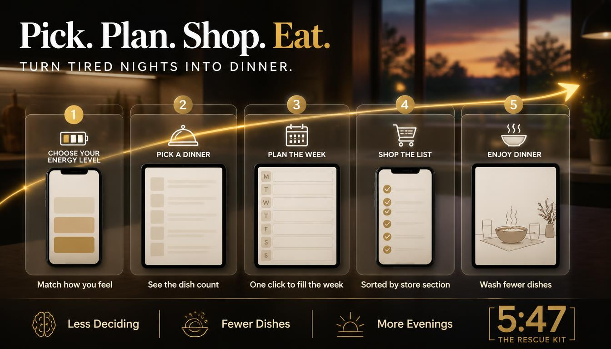
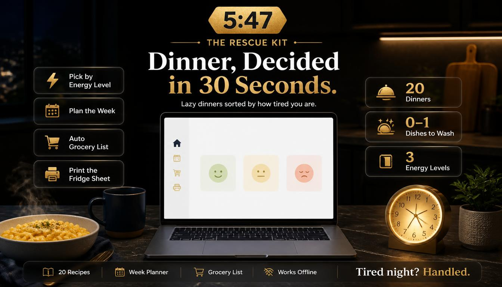
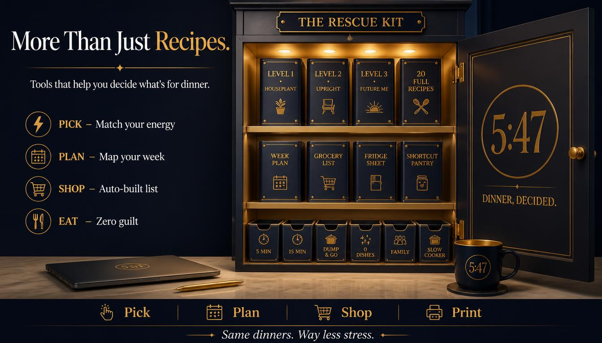
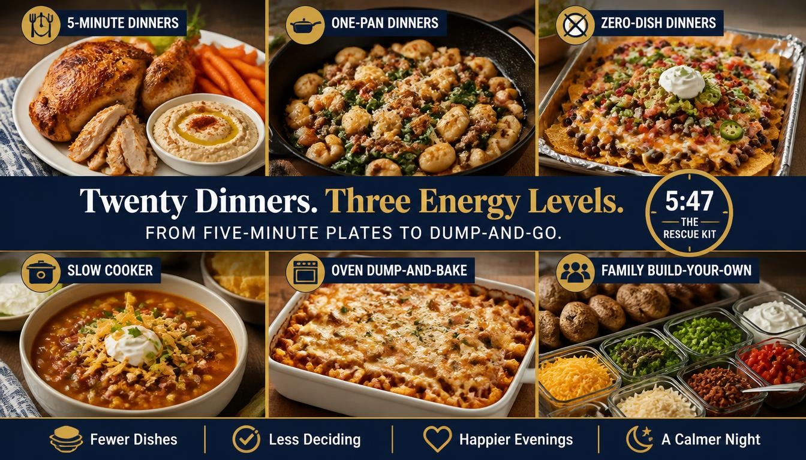

THE 5:47 P.M. RESCUE KIT

A growing library of low-effort dinners sorted by how tired you actually are, with fresh recipes added every month. Plus a week planner, a grocery list that builds itself and a fridge sheet the whole house can use.
Get Instant AccessOpens right in your browser · Works on your phone or computer · No app to install
It's almost six. You're tired. Everyone is hungry. Nobody agrees on anything.
Most recipes pretend you have energy. This one asks how you really feel first.
Rotisserie chicken plates, 5-minute burrito bowls and hummus wraps. Barely any cooking at all.
Egg fried rice, naan pizzas, skillet gnocchi and sheet-pan dinners. Real food, quick.
Slow cooker meals and dump-and-bake dinners you start in the morning and forget about.

Three taps. That's the whole system.
One kit, built to take the thinking out of dinner.

Your kit keeps getting better, with fresh dinners added as the months go on.
Get the kit now and have tonight's dinner picked in about a minute.

Secure checkout through Whop
You get access right after checkout. It opens in your web browser, so there's nothing to install.
Yes. It works on phones, tablets and computers. Add it to your home screen for one-tap access.
Yes. Your picks are saved in the browser you use, on the same device. Clearing your browser data will erase them, and they don't sync between devices.
Yes. The fridge sheet and your grocery list both have a print button.
Yes. New recipes are added every month.